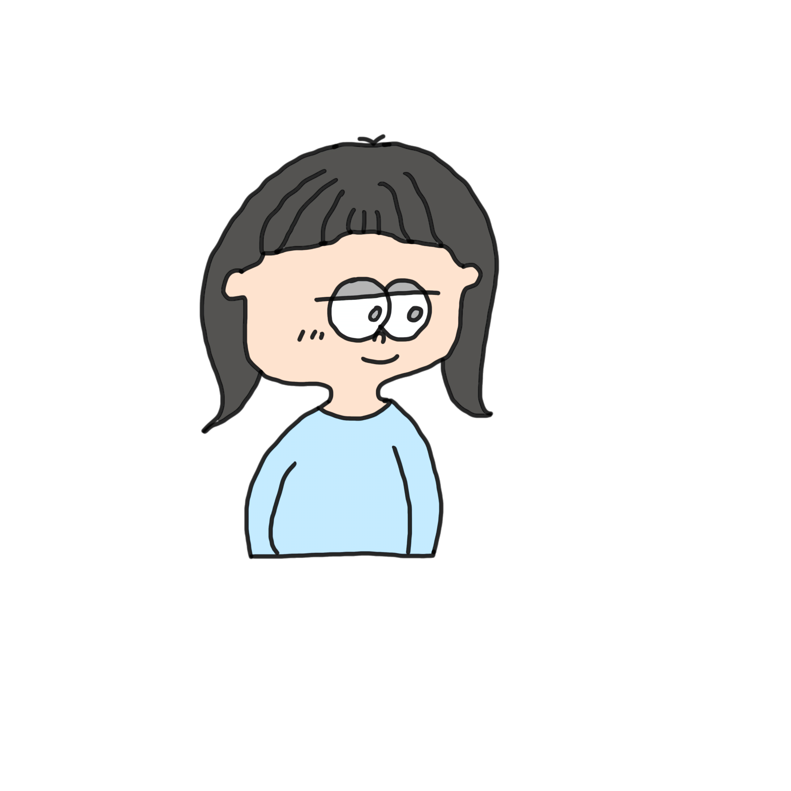
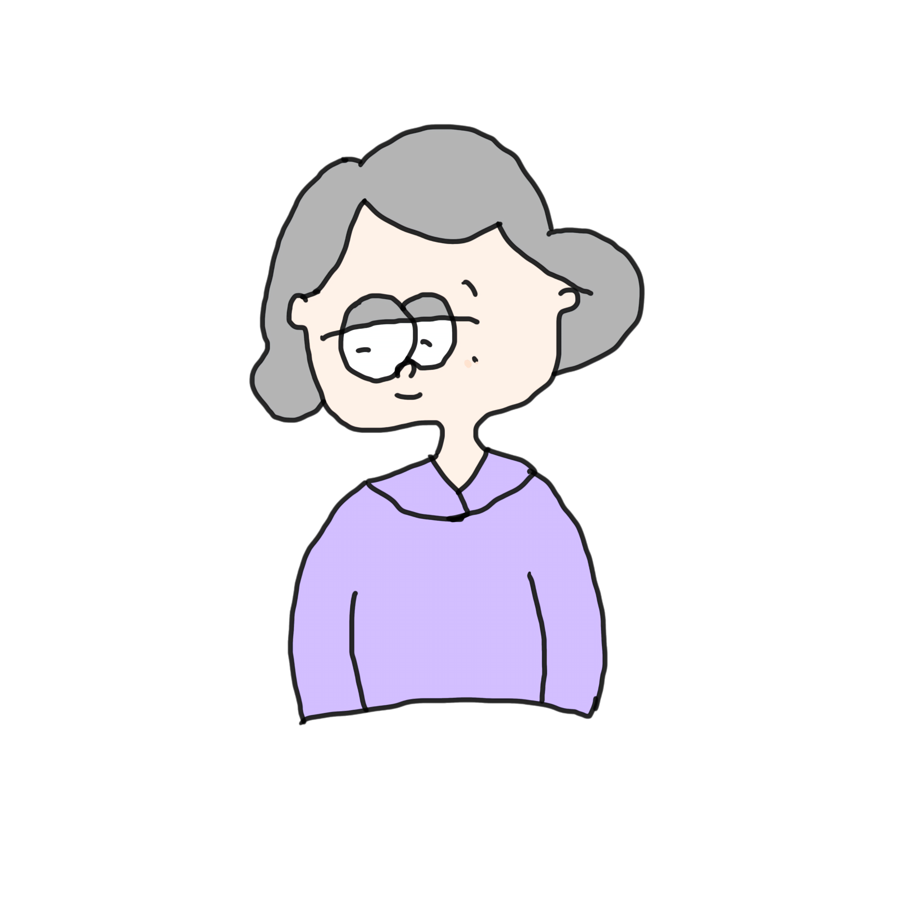

📺 インタビュー～20代の転機～ 📺


エピソード 1
まず20代の時に1番試練だと感じたことはなんですか。
20代はまだ楽しい時ですね。まだ私も学生時代ですわ。
大学3年の時でも、 親は一生懸命教育資金をちゃんと送ってくれたけど、
自分は勉強はあんまりしていなかったです。ただ楽しいことばっかりして、
ちゃらんぽらんにして、すごい幸せだなと思ってましたけど。
自分がどんな風になるかっていうのは、あんまり考えなかった。
まだ子供でした。私はもう本当、親にもうべったり甘えてたというか、
なにも考えてなくて、20代、はもう楽しいことが1番と思ってました。
でもそれが、夏休みの時に、宮崎のお父さん、お母さんから、お見合いしたら？って話がきました。
「えー、お見合い。お見合いって何。」って感じでした。
結婚までは結ばなくて、お見合いっていうのも、いいなと思いました。
鹿児島の城ホテルっていうホテルで美味しいものが食べられるって
いうもんですから。あっちの方は、お母さんが1人と、その息子が来て、
ランチを食べました。それで、美味しかったと思って、桜島を見て、
それから結婚っていう流れでした。でも、そんな考えてなかったんだ。
ただ、お見合いっていうのはこんなもんなんだとっていました。
でもそれが結局結婚っていう話になりました。あっちは27歳で、まだ若かったです。九州大学の医学部の、当時で1番優秀な人たちでした。アメリカに留学し、
アメリカで勉強しなくちゃいけなくて、1人じゃ何もできないから、
もう奥さんもらってから留学すればいいという話になり、
結婚することになったんです。その夏にお見合いして、
春に、結婚ってなったんです。結婚したら、もう苦しいことばっかりでした。
本当にもう、 鹿児島の男の人で、鹿児島の男の人はみんな厳しいのよ。
昔式で、封建式で、お洗面器をたらいって言うんだよね。洗うものも別々で、
竿を1番上は男のものを干し、下の方に女のものを干すという男性。
そういう鹿児島の人やから、全てが 宮崎でのほほんと過ごしてたものにとっては
ショックだった。毎日が涙を流しながらの生活でした。
20歳はもうひっくり返ったのよ、女の子だったから親から愛されて
楽しく過ごしたのが、一遍にもう地獄のとこにやられたような感じで。
宮崎と鹿児島は隣ありがとうございます。
では、結婚して、それからは地獄だったということだったのですね。
隣県なのに、違う文化があったんですね
そう違う。でも都城ぐらいまではやっぱりやっぱあれよ、
厳しいとこでしたよ。今も割と都城は鹿児島寄りですもんね。考え方がね。そう、言葉もそうだわ。
西郷さんの感じで、あの島漬けの武家の感じで、やっぱり日本人は昔の封建的な考え方がありましたね。
今の人はもう20歳にしても頑張って、自分の免許を取って、
学校の先生なりで自分の職業のものを大学時代で取得しますよね。
でも昔は大学卒業の人は少なかったわ。3分の1ぐらいだったでしょうかね。
だから、私の20歳っていうのは、 楽しいことばっかりだったっていう風に。
うん、そうね。大学の甘い生活に 勉強するっていうよりか、正しいところは、
やっぱり博物館とか、色々、美術館とか、色々、美学美術史学科だったから、
いろんなとこ、絵をね、見たりして、博物館も学芸員っていうのを取るんだよね。
博物館に1ヶ月ぐらい研修で行って、 小学芸員は慣れたんだけど。卒業する前に。
だけど結婚のために大学3年で辞めたっていうことです。
じゃあ、大学を大学3年で辞めることになってしまったんですね。
はい。4月に結婚だったから、ちょっと他の人とは違う人生あれかもしれない。
だけど、結局、結婚したら、その人はね、私をね、もう俺には教授の娘がね、
娘をもらってくれとか、いろんな話があったって。
だけど、俺、お前をもらってやったんだ。って言われました
すごく素敵な話じゃないですか
いや、それが悪い話だから。九大の大学院で研修医わやっていたんだけど、研修だから、給料あんまりないのよ。だから、もう、宮崎の親のとこからお金を送ってもらえって言われていました。私は親に手紙を書いて申し訳ありませんが、 生活費を送っていただけますか。って聞いて送ってもらってた。
だから、本当、苦しかった。もうまい、毎日1000円持ってお買い物に行って、1000円で食料品を買って毎日の生活を、しましたね。
だから、 女の一生って色々あるけど、その人その人ね、恵まれてる方だと思ってます。親がちゃんとね、私を可愛がってくれて守ってくれた。
でも、1回もなんていうの、ぼやきはしたけど、やっぱり自分の決断で決めたわけだから。親が決めてくれたけど、結局自分も資格とかを何も持ってなかったから。それこそ、中退したから。だから、やっぱりもうその旦那さんの言うことを聞かないと私は生きていけなかったから
エピソード 2
20代の時に1番嬉しかった出来事 はなんですか。
嬉しかったこと。うんち20代の1番嬉しかったことは。
そうね、、
結婚した時は嬉しかったけどね。
結婚した時はもう結婚決まって、みんなからおめでとうおめでとうって言われたから、
幸せにゴールインできたと思っていました。みんなよりも21歳という速さでゴールインしたわけですから。
20代にお見合いして、21歳で結婚して私の人生これから、もうバラ色ぐらい考えてたんでしょうね。
宮崎から福岡に行って、九州大学のドクターと結婚したわけ。
だから、九州のおいしいもののなんとかね、色々食べたのよ。
人生幸せを感じたのは私の第2の出発なんだ、と感じた結婚式かな。
本当ね、結婚式が1番嬉しかったかもしれない。いろんな人にお祝いされるから。
みんなはまだそんな結婚するもんじゃないよ。
まだ自分の若い時には、いろんな旅行したり、いろんなこと、自分のやりたいことができる。
だけどもう結婚した。もう何もできなくなるよっていう。本当そうやったけど。
だけど結婚が幸せもってことにしとってください。
エピソード 3
20代で学んだ教訓はなんですか。
母親っていうのはすごいなって。頑張ってるなって思う。
人間っていうことやったら、みんないろんな苦労があっても。
でも、その苦労は、うん、絶対無駄にはならない。
その苦労は、 その苦労した分だけ幸せになれるっていうのが今わかった。
もう私はなんでこんな苦労しなくちゃいけないやろかって本当思ったけど、
結婚して、旦那さんから、もう本当、毎日ガミガミ、ガミガミ言われて、夫は、
大学で、教授から、痛めつけられるわけです。だから、私にその反動が来て、
しかめっ面で帰ってこられて、怒られて、色々、髪の毛が落ちてるとか、
潔癖な人やったから、洗面所も、水が垂れてたらあかんとか、そういう、
いろんなことを1つ1つを言う人だった。私としてはいい修行させてもらいました。
あの頃は学生で結婚したようなもんでしたから。
では、結婚して、その、結婚式では、幸せを感じたんですね。
結婚までの流れとしては、大学生の夏休みに鹿児島のホテルで、会って、
3回目に会った時が結婚式だったんですか。
そうです。だから性格も何にもわからないまま結婚したので、
辛い結婚生活をおくることになりました。
毎日泣いてました。1人で。親にはそんな言えんから、やっぱり。
自分のことだからと思って、もう本当、泣いて暮らしました。
今考えれば、よく生活してきたなと思ってね。ストレスとかでげそって、
痩せましたよ。親戚がみんな心配してくれてた。
「キョウコちゃん、そんな何が苦しいの？って」。
20代で学んだ教訓は、苦しいことが全部倍になって、
後で帰ってくるってことが今わかった。その時はもう本当に苦しくて苦しくて、
その倍で帰ってきたなって1番思った出来事はありますか。
自分の子供たちが女の子が2人の男の子1人。
ちゃんと立派に元気な子が生まれて。うそしてみんな私の味方をだっていうの。
わかってくれたこと。
もう本当に今からもう楽しみなさいよってみんな言ってくれる。
その気持ちがわかってくれてるってことがね、すごく嬉しい。
私、全然 勤めたこともないわけだから。働いていたら自分の仕事のこととかね、
色々言えるでしょうけど。学生がそのまま結婚して、
何も知らないまま結婚したから、毎日お前は働いとらんからわからんちゃとか
言われていました。だから、やっぱり子供はみんなちゃんと素直にいい子に
育ってくれて、みんなそれぞれいい家庭を持ってくれて。
みんなそれぞれ子供たちの教育をして、 関心を持って。
うちのその旦那さんはね、運動会は1回しかきたことがなかった。
それが来てくれたのはゴルフ場に行くつもりだったけど
道路が崩れたからきたんだよ。付属の小学校のトイレのところでご飯を
みんな広げて食べよったら来て、道路がダメになったからご飯くれって、
ちょうどお昼ごはんのときにきましたね。本当、おかしな話だった。
それっきりだった。子供たちのことを構う人じゃなかったから。
だから、本当に反面教師って言うけど。特に今彩花ちゃんのお父さんは、
子供たちにね、一生懸命やってくれてるっちゅうのは、
やっぱ自分が面倒見てくれなかったからじゃないかな。
自分のことだけで、 病院で仕事が5時に終わったら飲みに行く。
1人っ子で甘やかされて育てられてきたから、掃除もしたことがない。
子どもたちに助かったってことだよ、私。その苦労がね、もうみんながちゃんと
立派に育ってくれて、それなりにこの家庭をちゃんとね、やってるっていうのが、
1番感謝する。
エピソード 4
20代に今戻れるとしたら何をしますか。
そうね、もうちょっと勉強して。本当に社会のために役立つことが
あったらよかったなと。もう本当、なんも 勉強もしない。
もう真ん中だったらいいって感じの感じだったからと。
欲が、欲がなかったね。あー、欲って大事ね。
もう今ね、スタミナがない。ちょっと、もう30分集中して。
もう疲れて、もうドタッとなるもんね。だから、やっぱり若さって大事。
そう、若さって大事だなと思う。若い時の、なんだろう、パワー。
今でしょ。って言うけど、本当、今。今って大事ね。
その時にその時その時の 思い出、頑張ってやらなくちゃいかんわね。今大事。
今を大事に。
ありがとうございます。
じゃあもしその20代の頃の自分に会えるなら、なんていう言葉をかけますか。
そうね。よう頑張ったね。頑張った。いつかよくなるよって言いたい。
春、冬ならば春とかじれるけど、本当、春が来るよ。
どんな苦しいことでも、絶対春が来るね。でも、東海地震あるの人たち、能登の方もそうだしね、地震がいつまでもあるから、あの人たちにとっては、希望がぐちゃってなるから、可哀想だなとおもう。けど、いつかは、その人なりにいい思い出がね、
できればいいね。私にとっては本当もうここまでこれて幸せだなと思います。
20代の時に人生が1番大きく変わるきっかけとなった出来事はなんかありますか。
20代の人生が大きく変わったこと。やっぱ結婚です。
色々あったね。本当。20代からも結婚。全然もう聞いてないでしょうけどね。
私、 宮崎から大分の国立病院っていうとこに 就職決まってたんだよね。
教授のとこにずっと手伝いでいたんですね。九大病院にも勤めて、それから大分の大分大学付属病院に。
その大分の付属病院の時に、鹿児島の家が本島の実家なのね。
旦那さんの実家で、鹿児島出て、宮崎でしばらくお正月済まして、
そして、大分に帰る時に、交通事故にあいました。山を越えるところで、
旦那さんが運転してて、私はお兄ちゃん、お膝に助手席に座ってたの。
そしたら、黒い着物の人が目の前に現れ、引いちゃった。はね飛ばしたっていうかな。
そういうこともあったし、もう本当、人には話せないようなことがあっても、
旦那さんは もう、病院の方の患者を見捨てられないもんだから。
そしたら警察のバツがあって、教習がずっとあるのよね、あの時は息子は1歳になった。
1時間もその子たちを連れて、その講習を受けたりと。身代わりでは。
私が。運転してるわけじゃないんだけど、代理人っていうか、それで出席していましたね。
それもあったし。あと、患者さんに麻酔をかけようとした、その麻酔液が違う液でした。
薬剤師さんが間違いだったんだけどね。医療事故もあったし。
もう本当、新聞沙汰になるようなこともあって、苦しかったけど、
そういうのが、結局人生いろんなことがあったけど、乗り越えていかなくちゃいけないってことが
20代の時に学んだことでした。
人生が大きく変わるっていうか、結局 いろんなことがあるんだなって。
本当、人間、いろんな試練を受けるんだなってのを感じましたね。人生が大きく変わるようなことって言ったって、
もう本当、毎日毎日がいろんなことがあったよ。毎日山あり谷あり。
本当それが人生やね。平凡な人いないわ。本当、それなりに色々あるってことや。
本当に人には言えないことだけどね。今も本当、人にはこれは話せない。人生楽じゃない。
私は本当、この旦那さんにね、もう悩まされました。昔だから離婚できんかったのだと思うよ。
けどここまで来れたんだから。もう、すごい人でしたわ。でも、父親が持ってきたお見合いだから、
許してもらえるなとは思うけど。本当、人生相談があったら、
話し相談乗ってもらいたいなと思うようにあったけど、昔はそんなに人生相談受けるようなとこもなんもないし、
ここまでこれたのは、本当、みんな神様が守ってくれてたやんなと思ってて。
私ってなんだったんだろうか。ただのものだったんじゃないのかと思って。お金で売られたような感じがしてね。
でも、私は学年で結婚してよかったと思う。みんなの人生をずっと長く見られるじゃない。
今度、アヤカちゃん、アカリちゃんもまた結婚して、子供ができて、その時また帆孫みたいな。
長生きしようと思ってます。